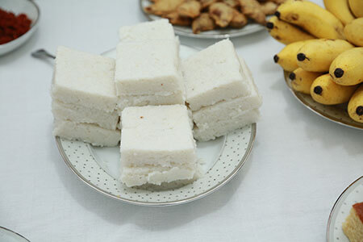
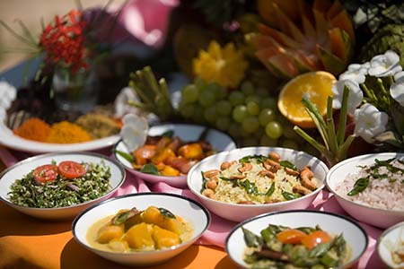
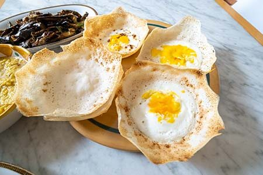

Food culture
Sri Lankan cuisine is known for its particular combinations of
herbs, spices, fish, vegetables, rices, and fruits. The cuisine is
highly centered around many varieties of rice, as well as coconut
which is a ubiquitous plant throughout the country
Traditional foods in Sri Lanka

Milk rice

Rice and curry

Egg hoppers